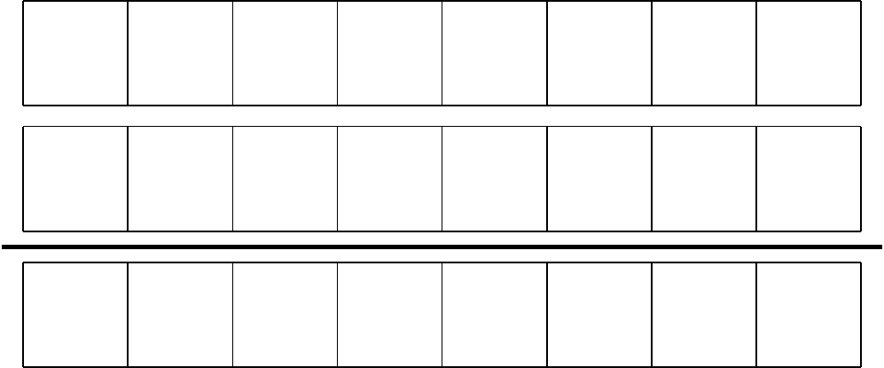

print(bin(115))0b1110011print(bin(71))0b1000111Un système de numération est un ensemble de règles qui permettent de représenter des nombres. Le plus ancien est probablement le système unaire où le symbole | représente l’entier un, || représente l’entier deux, ||| pour trois, |||| pour quatre et ainsi de suite. Ce système atteint vite ses limites, mais il permet de mettre en évidence le fait qu’il existe plusieurs façons de représenter les entiers.
| Nom français | Système unaire | Système décimal | Chiffres romains |
|---|---|---|---|
| Zéro | 0 | ||
| Un | | | 1 | I |
| Deux | || | 2 | II |
| Trois | ||| | 3 | III |
| \(\vdots\) | \(\vdots\) | \(\vdots\) | \(\vdots\) |
| Douze | |||| |||| |||| | 12 | XII |
| \(\vdots\) | \(\vdots\) | \(\vdots\) | \(\vdots\) |
Dans la table ci-dessus, on remarque que sur une ligne donnée, on retrouve quatre manières différentes de représenter le même entier. Pour le reste de cette section, il sera important de dissocier la représentation d’un nombre et sa valeur.
Définition 1.1 (Système de numération) Un système de numération permet de compter des objets et de les représenter par des nombres. Un système de numération positionnel possède trois éléments:
Lorsque plusieurs bases interviennent dans un même contexte, on écrit \((a_n \ldots a_1a_0)_b\) pour indiquer que le nombre représenté en base \(b\).
Définition 1.2 (Représentation polynomiale) Le système positionnel utilise la représentation polynomiale. Celle-ci est donnée par: \[ (a_na_{n-1}\ldots a_1a_0,a_{-1}a_{-2}\ldots a_{-m})_b = a_nb^n+a_{n-1}b^{n-1}+\ldots +a_1b^1+a_0b^0+a_{-1}b^{-1}+\ldots +a_{-m}b^{-m} \] où \(b\) est la base et les \(a_i\) sont des coefficients (les symboles de votre système de numération).
Il s’agit du système de numération le plus utilisé dans notre société. On peut le résumer avec les trois règles suivantes.
Exemple 1.1 Représentez le nombre 3482 sous une forme de numération positionnelle.
| Symboles (digits) | 3 | 4 | 8 | 2 |
|---|---|---|---|---|
| Rang (position) | \(\phantom{V}\) | \(\phantom{V}\) | \(\phantom{V}\) | \(\phantom{V}\) |
| Poids | ||||
| Valeur du poids | ||||
| Valeur de chaque symbole (digits) |
Nous avons donc que 3482=
Pour convertir un nombre de la base \(b\) vers la base 10 (décimal), on trouve sa représentation polynomiale.
Exemple 1.2 En utilisant la représentation polynomale en base 10, convertissez le nombre (176,21)8.
Ce concept est essentiel en informatique, puisque les processeurs des ordinateurs sont composés de transistors ne gérant que deux états chacun (0 ou 1). Un calcul informatique n’est donc qu’une suite d’opérations sur des paquets de 0 et de 1, appelés bits.
En base 2, le chiffre 2 n’existe pas (c’est un nombre); tout comme le chiffre 10 n’existe pas en base 10 (c’est un nombre).
Exemple 1.3 Convertissez le nombre (11001)2 en décimal.
| Symboles (digits) | 1 | 1 | 0 | 0 | 1 |
|---|---|---|---|---|---|
| Rang (position) | \(\phantom{V}\) | \(\phantom{V}\) | \(\phantom{V}\) | \(\phantom{V}\) | \(\phantom{V}\) |
| Poids | |||||
| Valeur du poids | |||||
| Valeur de chaque symbole (digits) |
Nous avons donc que (11001)2 =
Exemple 1.4 Convertissez les nombres suivants en base 10 (décimal).
Exemple 1.5 Quels sont les nombres qui, dans la base deux, succèdent à (0)2?
Exemple 1.6 Quels sont les nombres qui, dans la base deux, succèdent à (1110)2?
Le système hexadécimal est utilisé notamment en électronique numérique et en informatique car il est particulièrement commode et permet un compromis entre le code binaire des machines et une base de numération pratique à utiliser pour les ingénieurs. En effet, chaque chiffre hexadécimal correspond exactement à quatre chiffres binaires (ou bits), rendant les conversions très simples et fournissant une écriture plus compacte. L’hexadécimal a été utilisé la première fois en 1956 par les ingénieurs de l’ordinateur Bendix G-15.
On remarque qu’en base 16, les dix chiffres de 0 à 9 ne suffisent pas. Il faut donc se doter de 6 symboles additionnels. On utilise les lettres de A à F avec la signification suivante:
\[ (A)_{16}=(10)_{10}, \quad (B)_{16}=(11)_{10}, \quad (C)_{16}=(12)_{10}, \quad (D)_{16}=(13)_{10}, \quad (E)_{16}=(14)_{10}, \quad (F)_{16}=(15)_{10} \]
Exemple 1.7 Trouvez la représentation en base 10 de:
Exemple 1.8 Donnez, en base 16, les dix nombres qui succèdent à (AAA)16.
Définition 1.3 (Divisibilité) Si \(a\in\mathbb{Z}\), \(b\in\mathbb{Z}\) et \(a\neq 0\), on dit que \(a\) divise \(b\) s’il existe un entier \(c\) tel que \(b=ac\). L’entier \(a\) est alors appelé facteur de \(b\).
Si \(a\) divise \(b\), nous le notons \(a \mid b\).
Théorème 1.1 (Divisibilité) Soit \(a\), \(b\) et \(c\) des nombres entiers quelconques, avec \(a\neq 0\).
Exemple 1.9 Vrai ou faux? Justifiez en invoquant une définition, un théorème, en donnant une preuve ou un contre-exemple.
Théorème 1.2 Soit \(a\) et \(d\) des entiers, avec \(d>0\). Il existe une seule paire d’entiers \(q\) et \(r\) satisfaisant \[ 0\leq r<d \quad \text{et} \quad a=dq+r \]
Définition 1.4 (Diviseur, dividende, quotient, reste) Considérons \(a\) et \(d\) des entiers, avec \(d>0\). Le Théorème 1.2 stipule qu’il existe une seule paire d’entiers \(q\) et \(r\) satisfaisant \[ a=dq+r \quad \text{et} \quad 0\leq r<d \]
Par exemple, si \(a=17\) et \(d=3\), on a \[ 17=3\cdot 5+2 \quad \text{et} \quad 0\leq 2<3 \]
Pour convertir un nombre entier de la base 10 vers une base \(b\), il faut effectuer de façon successive des divisions en utilisant la Définition 1.4. Les restes des divisions successives correspondent aux coefficients de la représentation polynomiale (lire de base en haut).
Exemple 1.10 Convertissez les nombres suivants en binaire.
Nous pouvons utiliser la command bin de Python pour convertir des entiers décimaux en binaire.
print(bin(115))0b1110011print(bin(71))0b1000111Pour convertir un nombre fractionnaire en binaire, il suffit de multiplier (plutôt que de diviser) la partie fractionnaire en notant les parties entières et fractionnaires obtenues. Il faut ensuite répéter ces étapes avec la nouvelle partie fractionnaire et poursuivre le processus jusqu’à ce que la partie fractionnaire soit nulle. Les parties entières des résultats de ces produits correspondent aux coefficients de la représentation polynomiale (lire de haut en bas).
Exemple 1.11 Convertissez les nombres suivants en binaire.
La conversion en binaire ou en n’importe quelle base ne donne pas toujours une suite finie. Si c’est un nombre rationnel, la conversion donnera toujours une suite finie ou périodique.
Exemple 1.12 Convertissez en binaire les nombres suivants, en ne conservant que 6 chiffres pour la partie fractionnaire, au besoin.
Exemple 1.13 Convertissez les nombres décimaux suivants en hexadécimal.
Nous pouvons utiliser la command hex de Python pour convertir des entiers décimaux en hexadécimal.
print(hex(115))0x73print(hex(71))0x47Une des raisons pour lesquelles le format hexadécimal a été inventé est qu’il est particulièrement simple de convertir un nombre binaire en nombre hexadécimal et inversement.
| Hexa | 0 | 1 | 2 | 3 | 4 | 5 | 6 | 7 |
|---|---|---|---|---|---|---|---|---|
| Binaire | 0000 | 0001 | 0010 | 0011 | 0100 | 0101 | 0110 | 0111 |
| Hexa | 8 | 9 | A | B | C | D | E | F |
| Binaire | 1000 | 1001 | 1010 | 1011 | 1100 | 1101 | 1110 | 1111 |
Pour convertir un nombre binaire, on regroupe par paquets de 4 chiffres à partir de la virgule (pour la partie entière et la partie fractionnaire).
Exemple 1.14 Convertissez les nombres binaires suivants en hexadécimal.
Exemple 1.15 Convertissez les nombres hexadécimaux suivants en binaire.
Les codes binaires sont incontournables en informatique, car l’information la plus élémentaire est le bit (binary-digit).
Les mots de 8 ou de 16 bits écrits en binaire sont plus lisibles si on les inscrit en laissant un espace entre les groupes de quatre bits comme ceci: 0100 0001
On a avantage à représenter les zéros non significatifs pour montrer la taille des codes transcrits. remarquez que ces 0 à gauche ne sont d’ailleurs pas toujours non significatifs. En effet, les codes binaires ne représentent pas toujours des valurs numériques. Ce sont parfois simplement des codes qui ne représentent pas des quantités. Inutile donc de faire de l’arithmétique avec ces codes. Dans ce cas, cela n’a aucun sens de vouloir les convertir en décimal et ce serait une erreur d’omettre l’écriture des zéros à gauche.
Une adresse IP (Internet Protocol) est un numéro d’identification qui est attribué de façon permanente ou provisoire à chaque périphérique relié à un réseau informatique qui utilise l’Internet Protocol. L’adresse IP est à la base du système d’acheminement (le routage) des paquets de données sur Internet.
Il existe des adresses IP de version 4 sur 32 bits, et de version 6 sur 128 bits. La version 4 est actuellement la plus utilisée : elle est généralement représentée en notation décimale avec quatre nombres compris entre 0 et 255, séparés par des points, ce qui donne par exemple « 181.174.87.53 ».


Une adresse MAC (de l’anglais Media Access Control), parfois nommée adresse physique, est un identifiant physique stocké dans une carte réseau ou une interface réseau similaire. À moins qu’elle n’ait été modifiée par l’utilisateur, elle est unique au monde. Le MAC (acronyme de Media Access Control) n’a aucun rapport avec le Mac d’Apple (diminutif de Macintosh). Toutes les cartes réseau ont une adresse MAC, même celles contenues dans les PC et autres appareils connectés (tablette tactile, smartphone, consoles de jeux, réfrigérateurs, montres …).
On peut utiliser Python et le module uuid pour trouver l’adresse MAC de l’appareil que j’utilise pour écrire ces lignes.
import uuid
print(hex(uuid.getnode()))0xc0b5d7b3d9a2Rouge, vert, bleu, de l’acronyme RVB ou en anglais RGB « red, green, blue ») désigne un système de traitement optique, d’affichage électronique ou d’un codage de signal vidéo analogique, ou un codage informatique des couleurs.
Ce principe est exploité par un téléviseur, un écran vidéo ou d’ordinateur, lequel reproduit la couleur par synthèse additive, à partir de trois couleurs primaires : rouge, vert et bleu.
Pour l’univers infographique, la valeur de chacune des couleurs primaires s’exprime dans un intervalle entre 0 et le maximum, qui est soit 1 ou 100 %, soit 255.
L’informatique utilise des nombres codés en système binaire, par groupes de huit (octet). En attribuant un octet à chacun des canaux de couleur primaire, on obtient un nombre de couleurs tel que deux codes consécutifs, pour une ou plusieurs composantes, ne peuvent pas se distinguer sur un écran correctement réglé.
| Valeur | Couleur | Valeur | Couleur | Valeur | Couleur | Valeur | Couleur |
|---|---|---|---|---|---|---|---|
| #00FFFF | aqua / cyan | #008000 | green (vert) | #000080 | navy (bleu marine) | #C0C0C0 | silver (argent) |
| #000000 | black (noir) | #808080 | gray (gris) | #808000 | olive (jaune olive) | #008080 | teal (sarcelle) |
| #0000FF | blue (bleu) | #00FF00 | lime (vert citron) | #800080 | purple (violet) | #FFFFFF | white (blanc) |
| #FF00FF | fuchsia / magenta (fuchsia) | #800000 | maroon (bordeaux) | #FF0000 | red (rouge) | #FFFF00 | yellow (jaune) |
| Couleur | Valeur Rouge | Valeur Vert | Valeur Bleu | Hexadécimal |
|---|---|---|---|---|
| Red (rouge) | 255 (FF) | 0 (00) | 0 (00) | #FF0000 |
| Green (vert) | 0 (00) | 255 (FF) | 0 (00) | #00FF00 |
| Blue (bleu) | 0 (00) | 0 (00) | 255 (FF) | #0000FF |
| Yellow (jaune) | 255 (FF) | 255 (FF) | 0 (00) | #FFFF00 |
| Orange | 255 (FF) | 165 (A5) | 0 (00) | #FFA500 |
| Aqua | 0 (00) | 255 (FF) | 255 (FF) | #00FFFF |
| Navy blue (bleu marine) | 0 (00) | 0 (00) | 128 (80) | #000080 |
| Black (noir) | 0 (00) | 0 (00) | 0 (00) | #000000 |
| White (blanc) | 255 (FF) | 255 (FF) | 255 (FF) | #FFFFFF |
La méthode pour l’addition en base 10 peut s’appliquer pour n’importe quelle base (principe de report). Pour additionner en binaire, on procède comme en décimal. Quand le résultat de la somme d’une colonne est supérieur à 1 (utilise plus de 1 bit), on reporte ce bit au voisin de gauche.
En binaire:
| + | 0 | 1 |
|---|---|---|
| 0 | 0 | 1 |
| 1 | 1 | 10 |
Exemple 1.16 Effectuez les additions demandées:
Il existe de nombreuses manières de représenter un nombre entier dans la mémoir d’un ordinateur. Nous n’en verrons que quelques unes.
Définition 1.5 (Entiers non signés (nombres positifs)) Un nombre entier non signé (positif) est représenté par un nombre de bits préalablement fixé. Au besoin, on complète le nombre par des zéros à gauche fin d’avoir le nombre total de bits choisi.
Exemple 1.17 Transformez les entiers décimaux suivants en entiers non signés sur un octet (huit bits).
Exemple 1.18 Quel est le plus grand entier non signé pouvant être représenté avec:
Pour travailler avec des entiers qui peuvent être positifs ou négatifs, il faut inclure le signe du nombre dans sa représentation, et l’on parle alors d’entiers signés.
Définition 1.6 (Entiers signés (représentation signe et module)) Un nombre entier signé (généralement représenté dans un octet) est un nombre où le 1er bit (à gauche) est réservé au signe, et les autres bits permettent d’indiquer la valeur absolue du nombre. Pour indique qu’un nombre est positif (+), le 1er bit est 0, et pour un nombre négatif (-), le 1er bit est 1.
Exemple 1.19 Complétez les tableaux suivants qui indiquent la représentation signe et module sur 4 bits.
| Base 2 | Base 10 |
|---|---|
| 0000 | |
| 0001 | |
| 0010 | |
| 0011 | |
| 0100 | |
| 0101 | |
| 0110 | |
| 0111 |
| Base 2 | Base 10 |
|---|---|
| 1000 | |
| 1001 | |
| 1010 | |
| 1011 | |
| 1100 | |
| 1101 | |
| 1110 | |
| 1111 |
En utilisant les nombres entiers signés:
Exemple 1.20 Quelles sont les valeurs extrèmes pour des entiers signés représentés sur 4 bits?
Exemple 1.21 Écrivez la représentation signe et module sur 8 bits de:


Le complément à un d’un nombre binaire est la valeur obtenue en inversant tous les bits de ce nombre (en permutant les 0 par des 1 et inversement). Le complément à un d’un nombre se comporte alors comme le négatif du nombre original dans certaines opérations arithmétiques.
D’un point de vue algébrique, qui est plus général, c’est l’opération qui consiste à complémenter un nombre écrit en base \(b\) sur \(n\) chiffres à \(b^n-1\). C’est-à-dire que le complément d’un nombre \(a\) s’obtient par \((b^n−1)−a\).
Exemple 1.22 Le complément à 1 de 0100 =
Remarquons que dans l’Exemple 1.22, le complément à un représente le calcul de \((2^4-1)-0100=1111-0100=1011\)
Exemple 1.23 Représentez dans le tableau suivant toutes les valeurs possibles du complément à un sur 4 bits.
| Décimal | + | - |
|---|---|---|
| 0 | \(\phantom{000}\) | \(\phantom{000}\) |
| 1 | ||
| 2 | ||
| 3 | ||
| 4 | ||
| 5 | ||
| 6 | ||
| 7 |
Dans le système de complément à un, la valeur 0 a deux représentations : « +0 » et « -0 » (exemple sur 4 bits: 0000 et 1111), ce qui oblige à réaliser deux tests pour tester la valeur nulle d’un résultat. Afin de pallier ce défaut, on a introduit la représentation par complément à deux.
On obtient le complément à deux en ajoutant 1 au complément à un. On ignore alors la retenue sur le bit de poids fort.
Le complément à deux ne s’applique qu’à des nombres ayant tous la même longueur : avec un codage sur \(n\) bits, cette méthode permet de représenter toutes les valeurs entières de \(−2^n − 1\) à \(2^{n − 1} − 1\).
Tous les entiers en Python sont représentés en complémentation à deux et avec un nombre infini de bits (la limite est la capacité de mémoire de votre système). Par exemple:
from sys import getsizeof
counter1 = 0
counter2 = 100
counter3 = 2**64
size1 = getsizeof(counter1)
size2 = getsizeof(counter2)
size3 = getsizeof(counter3)
print(size1, size2, size3)24 28 36Dans la représentation en complément à deux:
Il n’est pas nécessaire de complémenter un nombre positif.
La complémentation à deux se fait en trois étapes:
0 par des 1 et tous les 1 par des 0).Exemple 1.24 Écrivez le nombre \(M=-4\) dans sa représentation en complément à deux.
Exemple 1.25 Trouvez les compléments à deux des octets suivants.
Exemple 1.26 Vous avez 8 bits.
Puisque les opérations internes de l’ordinateur ne permettent que l’addition, il faut troiver une manière d’effectuer une soustraction sans réellement en faire une. Par exemple, afin de calculer 10-4, il est possible de faire l’addition 10+(-4).
Ainsi, le complément à deux est nécessaire pour représenter les nombres négatifs et pour effectuer des soustractions.
Il est important de notes que:
1, on doit complémenter le nombre pour retrouver le nombre négatif qui représente la réponse.Cas particuliers:
Exemple 1.27 À l’aide de la complémentation à deux, calculez 49+25.

Exemple 1.28 À l’aide de la complémentation à deux, calculez 75+87.

Exemple 1.29 À l’aide de la complémentation à deux, calculez -64-56.
Exemple 1.30 À l’aide de la complémentation à deux, calculez -78-85.

1.Exemple 1.31 À l’aide de la complémentation à deux, calculez -59-18.

Exemple 1.32 À l’aide de la complémentation à deux, calculez 18-59.

En logique, une opération bit à bit est un calcul manipulant les données directement au niveau des bits, selon une arithmétique booléenne. Elles sont utiles dès qu’il s’agit de manipuler les données à bas niveau : codages, couches basses du réseau (par exemple TCP/IP), cryptographie, etc.
Les opérations bit à bit courantes comprennent des opérations logiques bit par bit et des opérations de décalage des bits, vers la droite ou vers la gauche.
En informatique, l’IEEE 754 est une norme sur l’arithmétique à virgule flottante mise au point par le Institute of Electrical and Electronics Engineers. Elle est la norme la plus employée actuellement pour le calcul des nombres à virgule flottante avec les CPU et les FPU. La norme définit les formats de représentation des nombres à virgule flottante (signe, mantisse, exposant, nombres dénormalisés) et valeurs spéciales (infinis et NaN), en même temps qu’un ensemble d’opérations sur les nombres flottants. Il décrit aussi cinq modes d’arrondi et cinq exceptions (comprenant les conditions dans lesquelles une exception se produit, et ce qui se passe dans ce cas).
Un nombre flottant est formé de trois éléments : la mantisse, l’exposant et le signe. Le bit de poids fort est le bit de signe : si ce bit est à 1, le nombre est négatif, et s’il est à 0, le nombre est positif. Les \(e\) bits suivants représentent l’exposant biaisé (sauf valeur spéciale), et les \(m\) bits suivants (\(m\) bits de poids faible) représentent la mantisse.

L’exposant peut être positif ou négatif. Cependant, la représentation habituelle des nombres signés (complément à 2) rendrait la comparaison entre les nombres flottants un peu plus difficile. Pour régler ce problème, l’exposant est « biaisé », afin de le stocker sous forme d’un nombre non signé.
Ce biais est de 2e−1 − 1 (e représente le nombre de bits de l’exposant) ; il s’agit donc d’une valeur constante une fois que le nombre de bits e est fixé.